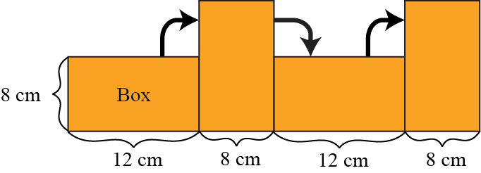
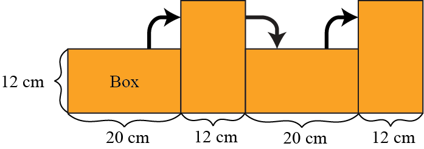
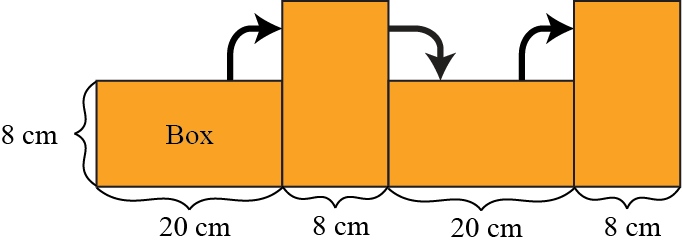

Problem
When Jack wraps a box, he first does a test to determine if his sheet of wrapping paper is long enough.
To do this, Jack places his box on top of the wrapping paper so that one edge of the box is lined up with the width of the wrapping paper. He then flips the box along the length of the paper so that each of its four sides touches the paper once.
![Four identical rectangles representing the different positions of the box during the test. The rectangles lie side by side on a horizontal line representing the wrapping paper. The line extends beyond the rectangles indicating extra paper. The first and third rectangles have their longer sides touching the paper and the second and fourth rectangles have their shorter sides touching the paper. Arrows indicate movement from the first rectangle to the second, from the second to the third, and from the third to the fourth.](images/BoxRoll.png)
If there is at least \(6\) cm of extra paper left after the last flip, Jack concludes that his sheet of wrapping paper is long enough. If there is less than \(6\) cm of extra paper left after the last flip, Jack rotates his box so a different edge of his box is lined up with the wrapping paper and tries his test again.
Jack wants to wrap a box with dimensions \(20\text{ cm} \times 12 \text{ cm}\times 8 \text{ cm}\).
He has a sheet of wrapping paper that is \(62\) cm long.
Would this sheet of wrapping paper be long enough to wrap his box? If so, how should he position his box on the wrapping paper at the beginning of his test? You can assume the wrapping paper is wide enough to wrap the box. Justify your answer.
Solution
To solve this problem we can try putting the box on the paper, and then check to see if the paper is long enough. Since the box has three dimensions, there are three different edge lengths that we can line up with the edge of the wrapping paper. We will consider these three different tests.
First Test
First we line up one of the \(20\) cm edges of the box with the width of the wrapping paper. Then when we look at the box from the side as we are rolling it along the paper, we will see only the \(8\) cm and \(12\) cm sides.

Rolling the box along the paper this way is the same as measuring the perimeter of a \(8 \text{ cm} \times 12 \text{ cm}\) rectangle, which is \(12+8+12+8=40\) cm. Since the wrapping paper is \(62\) cm long, there will be \(62-40=22\) cm of extra paper left after the last roll. This is more than \(6\) cm, so with this starting position, the wrapping paper is long enough to wrap Jack’s box.
Second Test
Next we will line up one of the \(8\) cm edges of the box with the width of the wrapping paper. Then when we look at the box from the side as we are rolling it along the paper, we will see only the \(12\) cm and \(20\) cm sides.

Rolling the box along the paper this way is the same as measuring the perimeter of a \(12 \text{ cm} \times 20 \text{ cm}\) rectangle, which is \(20+12+20+12=64\) cm. Since the wrapping paper is only \(62\) cm long, it is not long enough to wrap Jack’s box this way.
Third Test
Finally we will line up one of the \(12\) cm edges of the box with the width of the wrapping paper. Then when we look at the box from the side as we are rolling it along the paper, we will see only the \(8\) cm and \(20\) cm sides.

Rolling the box along the paper this way is the same as measuring the perimeter of a \(8 \text{ cm} \times 20 \text{ cm}\) rectangle, which is \(20+8+20+8=56\) cm. Since the wrapping paper is \(62\) cm long, there will be \(62-56=6\) cm of extra paper left after the last roll. Therefore with this starting position, the wrapping paper is just long enough to wrap Jack’s box.
Thus, the wrapping paper is long enough to wrap Jack’s box if he starts by placing the box on the wrapping paper with either the \(12\) cm edge or the \(20\) cm edge lined up with the width of the wrapping paper.
Extension: If this piece of wrapping paper was \(24\) cm wide, would it be wide enough to wrap the box? Think about how much wrapping paper would be needed on either side of the box when you are rolling it. Remember that you will need to wrap the two side faces of the box as well.
Teacher’s Notes
With two-dimensional objects, we are often interested in the area and perimeter of the object. With three-dimensional objects, the analogous measurements would be volume and surface area. There are some formulae we can use to find these measurements for common 3-D objects.
| 3-D Object | Dimensions | Volume | Surface Area |
|---|---|---|---|
| Cube | side length \(= s\) | \(s^3\) | \(6s^2\) |
| Sphere | radius \(= r\) | \(\dfrac{4}{3} \pi r^3\) | \(4 \pi r^2\) |
| Right Cylinder | radius \(= r\), height \(= h\) | \(\pi r^2 h\) | \(2 \pi r^2 + 2 \pi r h\) |
| Right Square Pyramid | base side length \(= a\), height \(= h\) | \(a^2 \dfrac{h}{3}\) | \(a^2 + 2 a \sqrt{\dfrac{a^2}{4} + h^2}\) |
| Right Cone | radius \(= r\), height \(= h\) | \(\pi r^2\dfrac{h}{3}\) | \(\pi r \sqrt{r^2 + h^2} + \pi r^2\) |
These formulae are useful when you need to know the volume or surface area of the objects above. Using calculus, we are able to find the volumes of more uncommon objects.